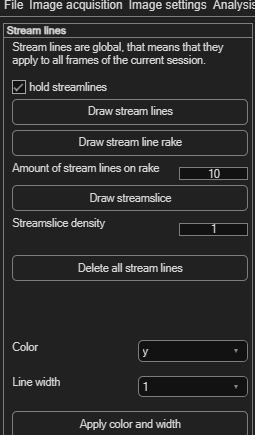
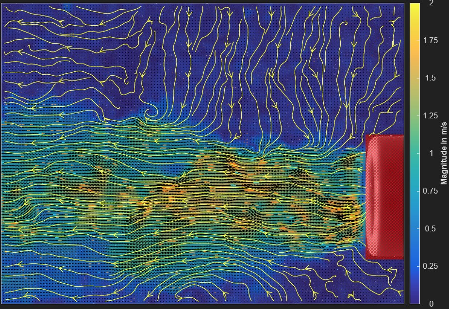

Streamlines
Streamlines trace the instantaneous flow direction through your vector field. Open via Plot → Streamlines.
Streamlines are global
Once drawn, streamlines apply to every frame in the session, not just the
one you drew them on.

Drawing streamlines
| Button | How it works |
|---|---|
| Draw stream lines | Click to place a streamline's starting point; every click adds another. Right-click to finish. |
| Draw stream line rake | Click once for the rake's start point, once more for its end point — PIVlab spaces Amount of stream lines on rake (default 10) evenly along that line. |
| Draw streamslice | Automatically fills the entire field with streamlines using MATLAB's
streamslice, at a density you set (default 1 — higher values draw more streamlines). |
hold streamlines (on by default) adds each new streamline to the existing set instead of replacing it — turn it off if you want each draw action to start fresh. Click Delete all stream lines to clear everything.

Styling
Choose a Color (yellow, red, blue, black or white) and Line width (1–3), then click Apply color and width.